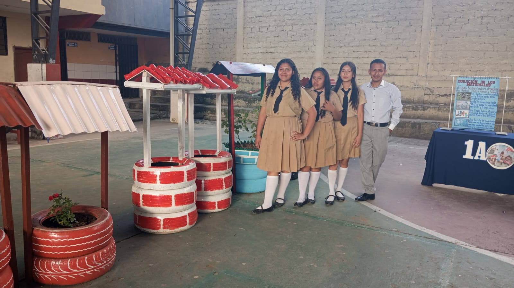
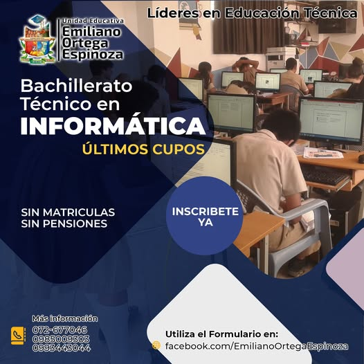
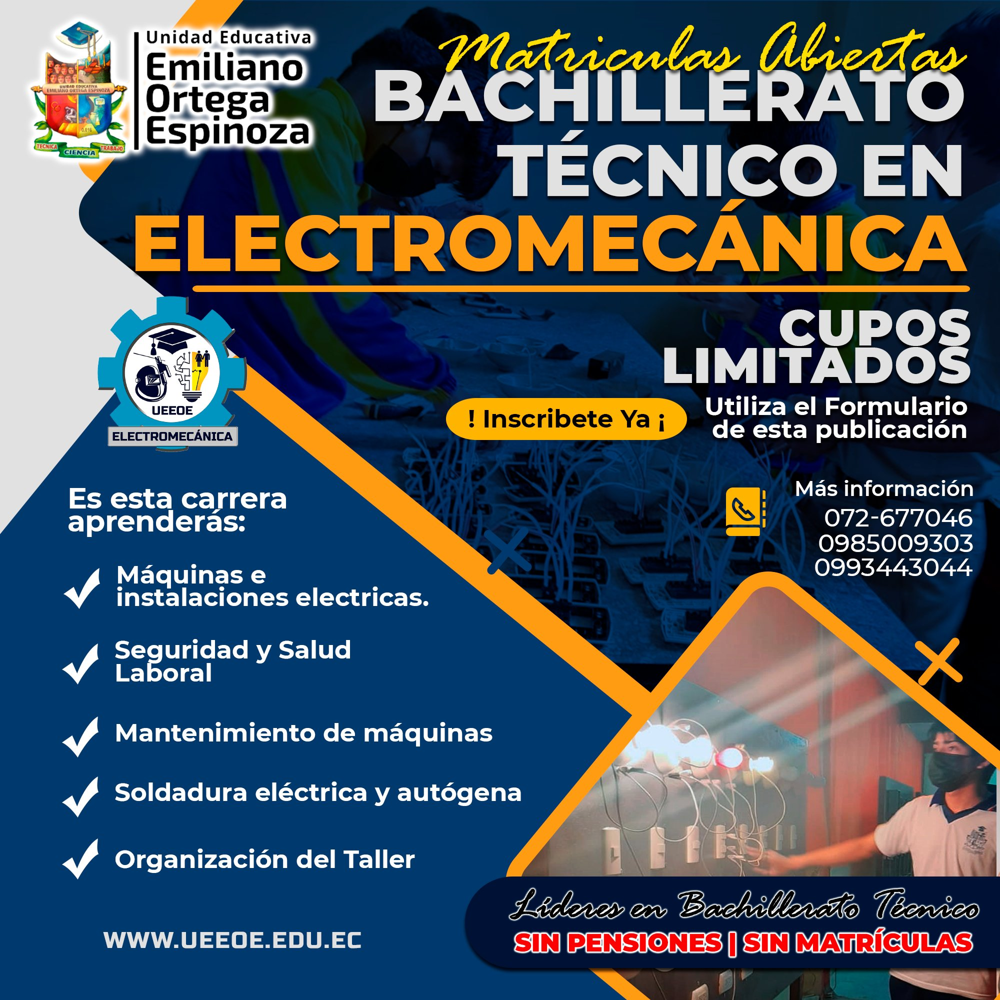
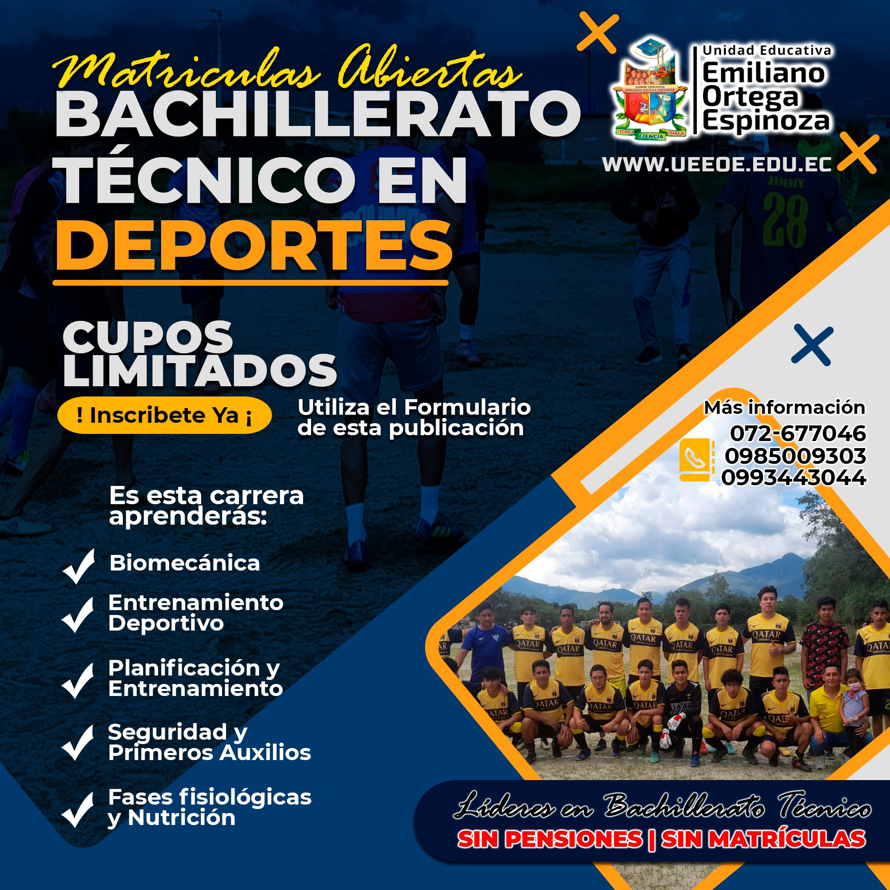

El Bachillerato General Unificado (BGU) que ofrece la Unidad Educativa Emiliano Ortega Espinoza tiene como finalidad proporcionar una formación integral a los estudiantes, fortaleciendo los conocimientos adquiridos durante la Educación General Básica y preparándolos para los estudios superiores.
Este bachillerato abarca diversas áreas del conocimiento como Lengua y Literatura, Matemática, Ciencias Naturales, Ciencias Sociales, Educación Física, Educación Cultural y Artística e Inglés, permitiendo al estudiante desarrollar habilidades intelectuales, comunicativas y sociales.
Además, el BGU fomenta el pensamiento crítico, la investigación, la responsabilidad, la ética y la participación ciudadana, formando jóvenes capaces de tomar decisiones conscientes y aportar positivamente a la sociedad.
Los egresados del Bachillerato General Unificado están preparados para continuar estudios universitarios, tecnológicos o incorporarse al ámbito laboral con una sólida base académica y valores humanos.

El Bachillerato Técnico en Informática está orientado a la formación de estudiantes en el área tecnológica, brindando conocimientos prácticos y teóricos relacionados con el uso de herramientas informáticas y sistemas digitales.
Durante su formación, los estudiantes adquieren destrezas en ofimática, programación básica, diseño digital, manejo de sistemas operativos, redes informáticas y mantenimiento preventivo y correctivo de equipos de computación.
Esta especialidad permite desarrollar habilidades como el pensamiento lógico, la resolución de problemas, la creatividad y el trabajo colaborativo, competencias fundamentales en el mundo digital actual.
Los egresados pueden incorporarse al ámbito laboral en áreas tecnológicas o continuar estudios superiores en carreras relacionadas con informática, sistemas, software o tecnologías de la información.

El Bachillerato Técnico en Electromecánica combina conocimientos de electricidad y mecánica, permitiendo a los estudiantes comprender el funcionamiento de máquinas, equipos eléctricos y sistemas industriales.
En esta especialidad se desarrollan competencias prácticas en instalaciones eléctricas, mantenimiento de motores, uso de herramientas, lectura de planos y aplicación de normas de seguridad industrial.
La formación electromecánica fortalece la disciplina, la responsabilidad y el trabajo técnico, preparando a los estudiantes para enfrentar desafíos en entornos productivos e industriales.
Los egresados pueden desempeñarse como técnicos auxiliares o continuar estudios superiores en áreas relacionadas con ingeniería, electricidad, mecánica o automatización.

El Bachillerato Técnico en Deportes está enfocado en la formación integral de estudiantes con interés en la actividad física, el deporte y la promoción de estilos de vida saludables.
Esta especialidad combina conocimientos teóricos con la práctica deportiva, fortaleciendo habilidades físicas, coordinación, resistencia, liderazgo y trabajo en equipo.
Además, se promueven valores como la disciplina, el respeto, la perseverancia y el juego limpio, fundamentales tanto en el ámbito deportivo como en la vida cotidiana.
Los egresados pueden continuar estudios superiores en áreas relacionadas con educación física, entrenamiento deportivo o recreación, o desempeñarse en actividades deportivas y comunitarias.